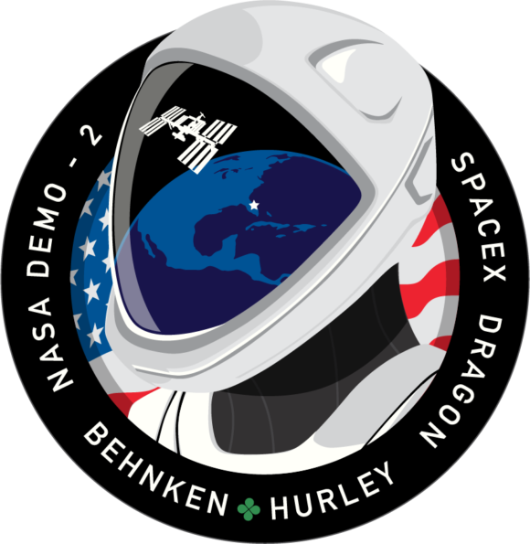

Hyperblogtu blog de confianza
Este es un titulo nuevo que estoy creando para probar cosas nuevas
Y este es el párrafo de inicio donde vamos a explicar las cosas increíbles que se pueden hacer con ramas

Los blogs son la mejor forma de compartir informacion y tus ideas. Mucho más que ir a conferencias o salir en youtube. Execeptos si eres un rockstar cosa que dudo mucho. Pero estadisticamente no lo eres....por ahora
Suscribete y dale like
Con amor hecho en Platzi